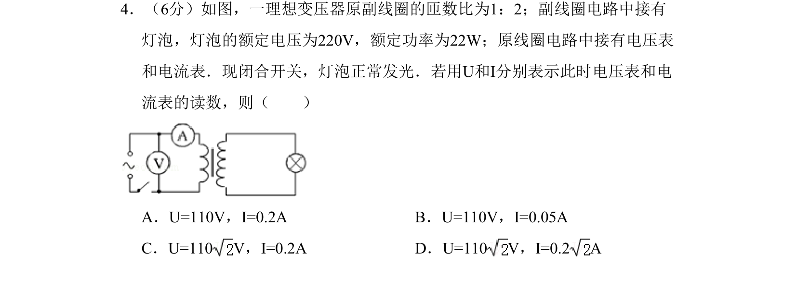
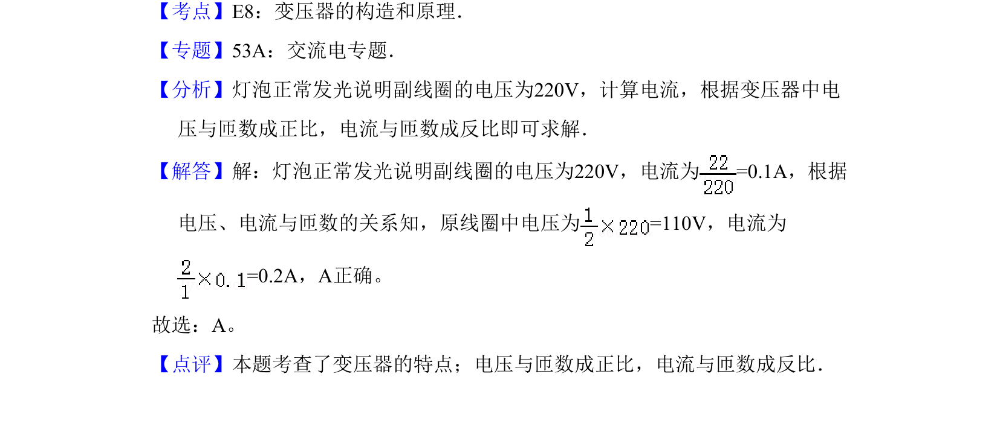

考点：变压器构造和原理 电压与匝数成正比 电流与匝数成反比 电功率
变压器构造和原理
电压与匝数成正比
电流与匝数成反比
电功率

该题通过理想变压器灯泡正常发光条件，考查原副线圈电压、电流与匝数的关系及电功率计算。

📄 原 PDF 第 4 页：素材/真题/吉林/2008-2024·（吉林）物理高考真题/2011年高考物理试卷（新课标）（解析卷）.pdf
素材/真题/吉林/2008-2024·（吉林）物理高考真题/2011年高考物理试卷（新课标）（解析卷）.pdf